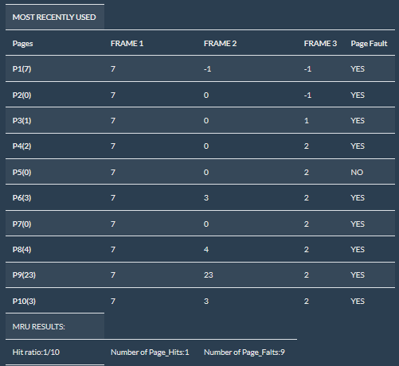
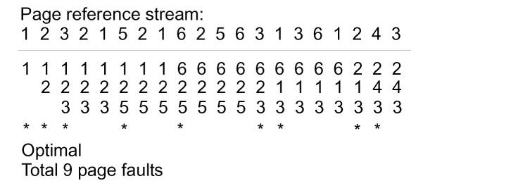
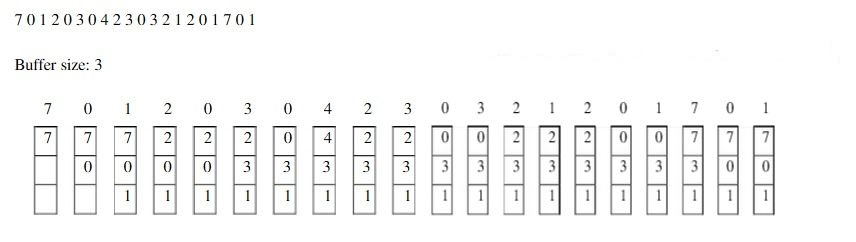
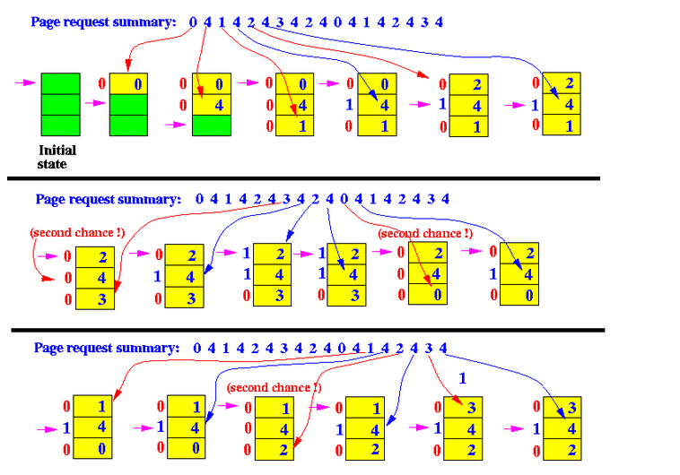
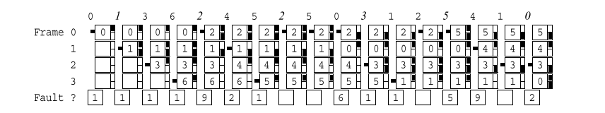

The page replacement algorithm decides which memory page is to be replaced. The process of replacement is sometimes called swap out or write to disk. Page replacement is done when the requested page is not found in the main memory (page fault).
When a page fault occurs, the operating system has to choose a page to remove from memory to make room for the page that has to be brought in. The page replacement is done by swapping the required pages from backup storage to main memory and vice-versa. If the page to be removed has been modified while in memory, it must be rewritten to the disk to bring the disk copy up to date. If, however, the page has not been changed (e.g., it contains program text), the disk copy is already up to date, so no rewrite is needed. The page to be read in just overwrites the page being evicted. A page replacement algorithm is evaluated by running the particular algorithm on a string of memory references and compute the page faults.Referenced string is a sequence of pages being referenced. Page fault is not an error. Contrary to what their name might suggest, page faults are not errors and are common and necessary to increase the amount of memory available to programs in any operating system that utilizes virtual memory, including Microsoft Windows, Mac OS X, Linux and Unix.
Each operating system uses different page replacement algorithms. To select the particular algorithm,
the algorithm with lowest page fault rate is considered.
1.First-In, First-Out page replacement
2.Least recently used page replacement
3.Least recently used page replacement
4.Optimal page replacement algorithm
5.most frequently used
6.Second chance page replacement(Clock page replacement)
7.4.Second chance page replacement(Clock page replacement)
With the FIFO algorithm, the OS maintains a queue to keep track of all the pages in memory, with the most recent
arrival at the back (tail of the queue), and the oldest arrival in front (head of the queue). When the system
needs space, a page will be replaced. With FIFO, the page at the front of the queue (the oldest page) is selected
for replacement. However, FIFO is know to suffer from a problem known as Belady's anomaly which occurs when
increasing the number of page frames results in an increase in the number of page faults for a given memory
access pattern.
In the Least Recently Used (LRU) page replacement policy, the page that is used least recently will be replaced.
Example :
red arrow show miss,blue arraw show hit
In the most Recently Used (LRU) page replacement policy, the page that is used most recently will be replaced.
Example: let reference string:7 0 1 2 0 3 0 4 2 3
 The algorithm has lowest page fault rate of all algorithm.
->Often called Balady's Min Basic idea: Replace the page that will not be referenced for the longest time.
• This algorithm replaces the page that will not be referred by the CPU in future for the longest time.
• It is practically impossible to implement this algorithm.
•This is because the pages that will not be used in future for the longest time can not be predicted.
•However, it is the best known algorithm and gives the least number of page faults.
•Hence, it is used as a performance measure criterion for other algorithms.
Example
Actually MFU algorithm thinks that the page which was used most frequently will not be needed immediately so it will replace the MFU page
Example: let reference string:7 0 1 2 0 3 0 4 2 3 0 3 2 1 2 0 1 7 0 1
Clock algorithm. The second chance algorithm is an approximation ofLRU based on using one use bit for each page. When a page is used
its use bit is set to 1. We also use a pointer to the next victim which is initialized to the first page/frame. When a page is loaded,
it is set to point to the next frame. The list of pages is considered as a circular queue. When a page is considered for replacement,
if the use bit for the next victim page is examined. If it is zero [that page is replaced] otherwise [the use bit is set to zero,
the next victim pointer is advanced, and the process repeated until a page is found with a zero use bit].
Consider the reference string shown along the top of the following graphical structure. The system has four frames.
Use the clock algorithm described in the previous paragraph.
The narrow boxes to the right of the page number boxes can be used to keep up with use bits.
Use the space between the page number boxes to show the next victim pointer.
The initial one is shown, Place the page number in the proper frame.
Mark when page faults occur in the bottom line of boxes. State how many page faults occur
Example

Enhanced Second-Chance Algorithm. The enhanced second chance algorithm uses one use bit and a modify bit for each page—many
variations of this are possible. When a page is used its use bit is set to 1. We also use a pointer to the next victim
which is initialized to the first page/frame. When a page is loaded, the next victim pointer will be set to the next
frame after the one just loaded. The list of pages is considered as a circular queue. When a page is considered for replacement,
the bit pairs for each page are considered
( ref,mod):
1. (0,0 ) neither recently used nor modified, best!
2. (0,1 ) modified but not recently used, will need to be written.
3. (1,0 ) recently used but clean—likely to be used again.
4. (1,1 ) both—likely to be used again and will need to be written.
There are three loops through the circular buffer containing these bits that may be used. They are:
(a) Cycle through the buffer looking for (0,0). If one is found, use that page.
(b) Cycle through the buffer looking for (0,1). Set the use bit to zero for all frames bypassed.
(c) If step 2 failed, all use bits will now be zero and repetition of steps 1 and 2 are guaranteed to find a frame for replacement.
Example:refernce string -> 0 1 3 6 2 4 5 2 5 0 3 1 2 5 4 1 0
